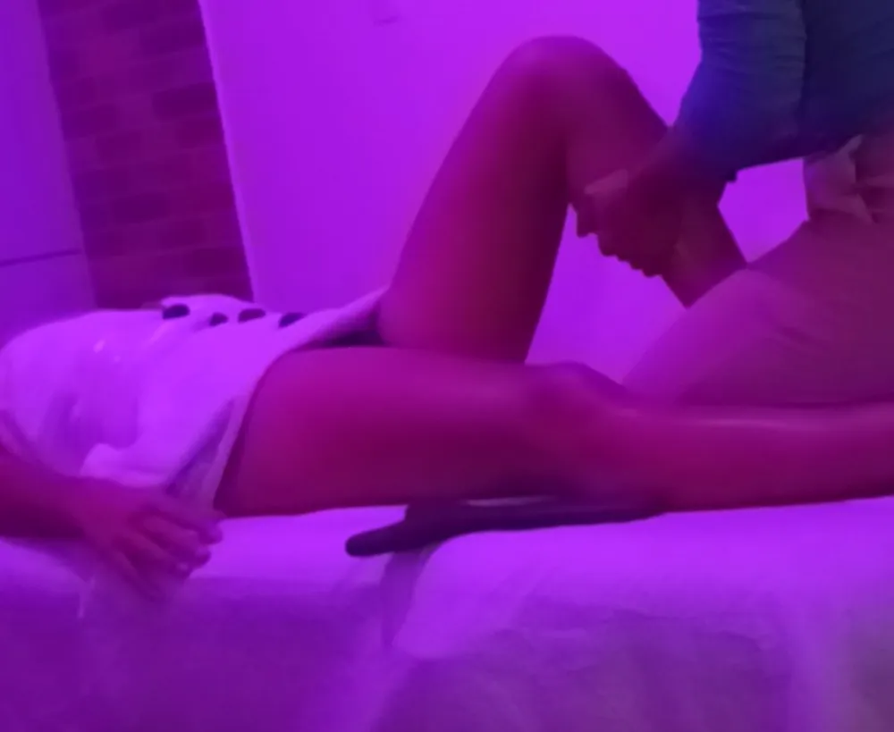
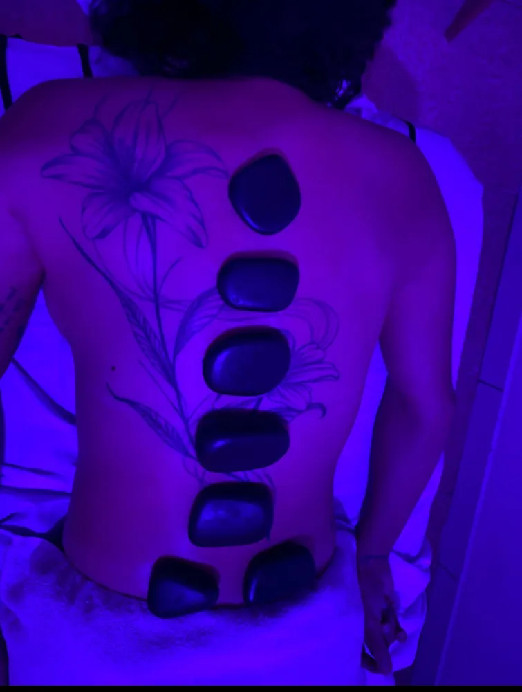

Massagem no Campeche: para quem vive entre o mar e a correria
Massagem no Campeche, no Novo Campeche, no Rio Tavares, no Morro das Pedras e na Lagoa da Conceição. Terapêutica para o corpo que surfa, corre e trabalha, relaxante para a mente que precisa desligar.
- Campeche e Rio Tavares
- Morro das Pedras
- Lagoa da Conceição
- Hora marcada


Massagem no Campeche e no Sul da Ilha
A Karol atende o Campeche e os bairros do Sul e do Leste da Ilha, como Rio Tavares, Morro das Pedras, Armação e Lagoa da Conceição. "Massagem Campeche" é a busca por bairro com mais procura em Florianópolis, com cerca de 170 buscas por mês, somando mais de 240 com as variações.
O Campeche é um bairro de gente ativa: surf de manhã cedo, corrida na Avenida Pequeno Príncipe, trilha até o Morro das Pedras, beach tennis no fim da tarde. E também de muita gente que trabalha remoto, com o notebook na mesa da cozinha. Os dois perfis chegam com o corpo pedindo cuidado, só que por motivos diferentes.
- Massagem terapêutica e liberação para quem treina
- Ventosa para costas e ombros sobrecarregados
- Relaxante com pedras quentes
- Reiki com cristais

Massagem para surf, corrida e beach tennis
Quem pratica esporte ao ar livre no Sul da Ilha tem padrões de tensão bem conhecidos.
Surf
Remada é ombro, costas e pescoço estendido olhando para frente. A massagem terapêutica com ventosa solta dorsais e trapézio e ajuda a voltar para a água sem dor.
Corrida na Pequeno Príncipe
Panturrilha dura, fáscia da coxa tensa, quadril travado. A liberação com instrumento é a técnica preferida de quem corre.
Beach tennis
Antebraço, punho e ombro do lado da raquete. Trabalho direcionado na musculatura em volta da região sobrecarregada.
Trilhas e stand up
Pernas e lombar cansadas depois de subir o Morro das Pedras ou remar na Lagoa. Relaxante com pedras quentes fecha o dia perfeito.
Treinou pesado?
Marque sua recuperação para o dia seguinte. Chame no WhatsApp.
Bairros atendidos no Sul e Leste da Ilha
Campeche e Novo Campeche
O bairro mais procurado. Local e horário combinados pelo WhatsApp.
Rio Tavares
Colado ao Campeche, na rota da SC-405. Muita gente que trabalha em casa.
Morro das Pedras e Armação
Mais ao sul, para quem vive perto das praias e trilhas.
Lagoa da Conceição
Buscas por "massagem Lagoa da Conceição" também aparecem todo mês. Atendimento combinado pelo WhatsApp.
Carianos e Tapera
Região do aeroporto, também dentro da área.
Ribeirão da Ilha
Mais distante, mas vale perguntar: a Karol verifica a disponibilidade.
Nômades digitais e home office no Campeche
O Sul da Ilha virou endereço de muita gente que trabalha remoto. A liberdade é ótima, mas a mesa improvisada, a cadeira de jantar e as horas sem levantar deixam o pescoço duro e a lombar pesada.
Uma massagem terapêutica por semana, nas primeiras semanas, e depois a cada quinze dias costuma ser suficiente para quebrar o ciclo de tensão. Junto, a Karol orienta pausas e alongamentos simples para fazer entre uma reunião e outra.
E se o problema é mais a cabeça do que o corpo, a combinação de pedras quentes e Reiki é o caminho para desligar de verdade.

Cuidado feito à mão




Hidratação e recuperação muscular depois do esporte
Quem treina ao ar livre no Sul da Ilha sabe: sol, vento e água salgada desidratam mais do que parece. Um músculo desidratado fica mais rígido, cansa antes e demora mais para recuperar.
A massagem ajuda a soltar a musculatura e a ativar a circulação, mas funciona muito melhor com três cuidados simples: beber água ao longo do dia e não só no treino, repor sais depois de treinos longos no calor e dormir bem.
No dia da massagem, capriche ainda mais na água e evite treino pesado logo depois. Deixe o corpo absorver o cuidado.
Sinais de que seu corpo precisa de recuperação
Panturrilha que não solta
Mesmo depois de alongar, continua dura.
Ombro estalando na remada
Tensão acumulada nos músculos que estabilizam o ombro.
Quadril travado
Comum em quem corre na areia fofa ou em trilha.
Cansaço que não passa
O corpo não está conseguindo se recuperar entre os treinos.
Dor no pé ao acordar
Pode ser sobrecarga na planta do pé. Vale avaliar com um profissional.
Rendimento caindo
Às vezes o que falta não é treino, é recuperação.
Plano de massagem para quem treina no Sul da Ilha
| Esporte | Quando marcar | Técnica |
|---|---|---|
| Surf | Após semanas de muitas sessões na água | Terapêutica + ventosa em ombros e costas |
| Corrida | Dia seguinte ao treino longo | Liberação com instrumento nas pernas |
| Beach tennis | Semanal em época de torneio | Terapêutica em antebraço e ombro |
| Trilhas | Depois das trilhas mais longas | Liberação nas pernas + pedras quentes |
| Stand up e remo | Mensal | Ombros, dorsais e lombar |
Massagem na Lagoa da Conceição
A Lagoa da Conceição tem um público próprio: moradores que trabalham com turismo e gastronomia, praticantes de kitesurf e stand up, e muita gente que escolheu viver perto da natureza. As buscas por "massagem Lagoa da Conceição" aparecem todo mês.
Quem trabalha em pé nos restaurantes e bares da Avenida das Rendeiras sente as pernas e a lombar. Quem pratica esporte na água sente ombros e costas. A Karol atende os dois perfis, com local e horário combinados pelo WhatsApp.
Relaxar no Sul da Ilha: pedras quentes e Reiki
Nem toda massagem no Campeche é sobre esporte. Muita gente escolheu o Sul da Ilha justamente para desacelerar, e mesmo assim acaba presa numa rotina corrida de trabalho remoto e compromissos.
Para esses dias, a combinação de massagem relaxante com pedras quentes e Reiki é a mais pedida: ritmo lento, calor, silêncio e cristais. Uma hora para voltar a sentir o próprio corpo.

Massagem para kitesurf, windsurf e stand up
O vento que sopra na Lagoa da Conceição e em outras praias do Sul e do Leste da Ilha faz da região um destino de kitesurf e windsurf. Esses esportes exigem muito do core, da lombar, dos ombros e das pernas, que seguram a tração da pipa ou da vela o tempo todo.
Já o stand up paddle trabalha ombros, dorsais e equilíbrio. Em comum, todos deixam a musculatura das costas e dos ombros sobrecarregada. Massagem terapêutica com ventosa e liberação nas pernas é a combinação que mais ajuda na recuperação.

Armação, Pântano do Sul e Ribeirão da Ilha
Mais ao sul, a Armação, o Pântano do Sul e o Ribeirão da Ilha guardam o lado mais tranquilo e tradicional de Florianópolis, com comunidades de pescadores, ostras e trilhas para praias como a Lagoinha do Leste. Quem mora ali costuma ficar longe de tudo, inclusive de serviços de bem-estar.
A Karol verifica a disponibilidade para atender esses bairros. É só mandar uma mensagem com o seu bairro e o melhor dia da semana.

Uma rotina de autocuidado para o Sul da Ilha
Segunda
Treino leve ou caminhada na praia para soltar o corpo depois do fim de semana.
Meio da semana
Pausas regulares no home office e alongamento de pescoço.
Sexta
Hidratação reforçada antes dos treinos longos de sábado.
Depois do treino longo
Massagem terapêutica ou liberação nas pernas.
Uma vez por mês
Relaxante com pedras quentes para desligar de verdade.
Sempre
Dormir bem: é quando o corpo realmente se recupera.
Massagem no Morro das Pedras e na Armação para quem vive perto da natureza
Entre o Campeche e a Armação, o Morro das Pedras tem vista para o mar aberto, trilhas e muita gente que escolheu viver longe da agitação. É um público que valoriza cuidado natural, tranquilidade e atendimento sem pressa, exatamente a proposta da Karol.
Por aqui, as combinações preferidas são a massagem relaxante com pedras quentes, para quem quer desacelerar, e a terapêutica com liberação nas pernas, para quem encara as trilhas e as subidas do bairro com frequência. Combine local e horário pelo WhatsApp.
Karoline Maia, terapeuta corporal e trancista
Karoline Maia é a fundadora da Karoline Maia Terapias e atende pessoalmente cada cliente, da massagem terapêutica, ventosa, pedras quentes e Reiki às tranças box braids e boho. Todas as fotos deste site são de atendimentos reais feitos por ela.
Atendemos com hora marcada em toda a Grande Florianópolis. Telefone e WhatsApp: (48) 99145-5759. Instagram: @karoline_maia_terapias.
Escolha a técnica que combina com você
Massagem terapêutica
Para dores, tensão muscular, tendinite e sobrecarga.
Ver páginaMassagem relaxante e pedras quentes
Para estresse, ansiedade e sono ruim.
Ver páginaVentosaterapia
Para destravar a musculatura e ativar a circulação.
Ver páginaReiki com cristais
Tratamento energético para desacelerar a mente.
Ver páginaTambém atendo perto de você
Massagem em São José
Kobrasol, Campinas, Barreiros e Forquilhinhas.
Ver páginaMassagem em Palhoça
Pagani, Pedra Branca, Ponte do Imaruim.
Ver páginaMassagem no Centro de Florianópolis
Centro, Agronômica, Trindade e Itacorubi.
Ver páginaMassagem em Canasvieiras
Norte da Ilha: Jurerê, Ingleses, Cachoeira.
Ver páginaMassagem no Estreito
Continente: Coqueiros, Capoeiras, Balneário.
Ver páginaToda a Grande Florianópolis
Biguaçu, Santo Amaro e demais cidades.
Ver páginaPerguntas sobre massagem no Campeche
Atende no Campeche?
Sim. Campeche, Novo Campeche, Rio Tavares e Morro das Pedras estão na área de atendimento. Local e horário são combinados pelo WhatsApp.
Qual a melhor massagem para quem surfa?
Massagem terapêutica com ventosa em ombros, dorsais e pescoço, as regiões mais exigidas pela remada.
Atende na Lagoa da Conceição?
Sim, a Lagoa também está na área. Combine pelo WhatsApp.
Posso marcar no dia seguinte a uma prova de corrida?
Pode e é recomendado. A liberação com instrumento ajuda muito na recuperação.
Quanto custa?
Depende da técnica e da duração. Receba o valor exato pelo WhatsApp.
Atende no Rio Tavares?
Sim, o Rio Tavares está na área de atendimento, assim como o Novo Campeche e o Morro das Pedras.
Qual massagem é melhor para quem faz kitesurf?
Massagem terapêutica com ventosa em lombar, ombros e costas, e liberação nas pernas, que seguram a tração o tempo todo.
Atende no Ribeirão da Ilha?
Pergunte pelo WhatsApp. A Karol verifica a disponibilidade para o extremo sul.
Posso fazer massagem com pele queimada de sol?
Avise antes. A técnica é adaptada e a ventosa não é feita em pele queimada.
Faz massagem para quem trabalha remoto?
Sim, é um dos perfis mais comuns no Sul da Ilha. O foco costuma ser pescoço, ombros e lombar.
Atende no Novo Campeche?
Sim, o Novo Campeche está dentro da área de atendimento, assim como a região da Avenida Pequeno Príncipe.
Qual o melhor dia para marcar depois de uma prova de corrida?
O dia seguinte à prova é o ideal para a liberação nas pernas. Evite massagem forte logo antes de competir.
Atende na Tapera e no Carianos, perto do aeroporto?
Sim, os bairros próximos ao aeroporto também estão na área de atendimento. Diga seu bairro no WhatsApp para combinar o local e o melhor horário da semana.
Sul da Ilha, hora de cuidar do corpo.
Agende pelo WhatsApp.